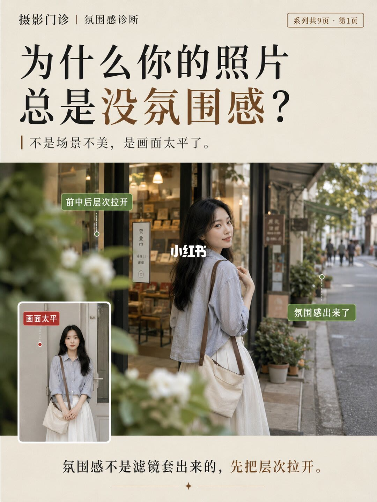
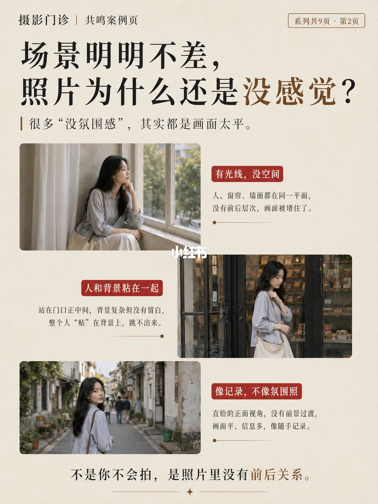
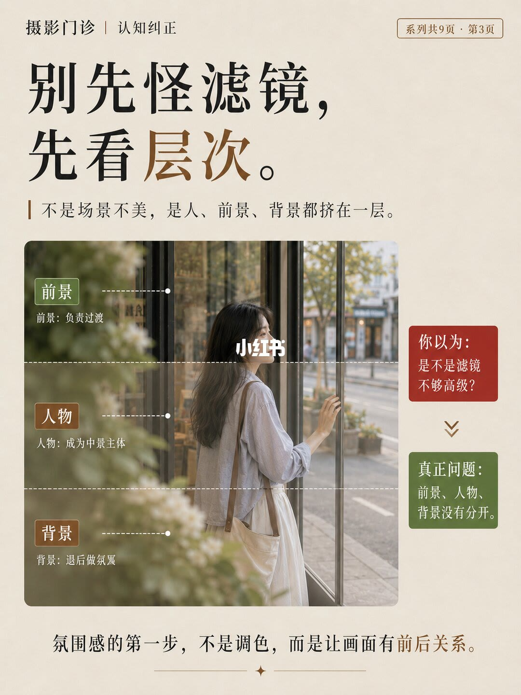
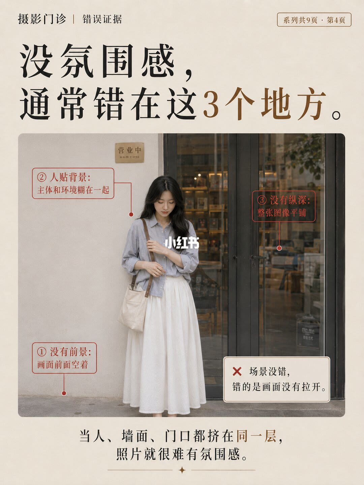
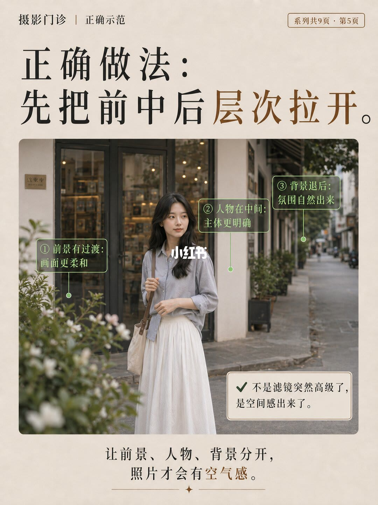
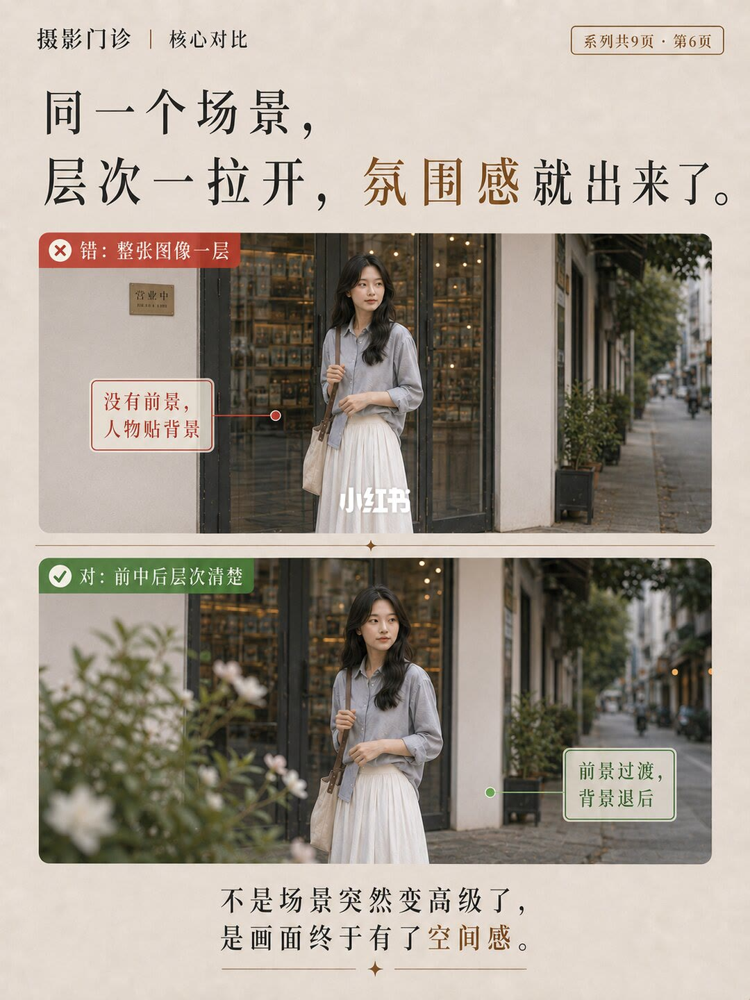
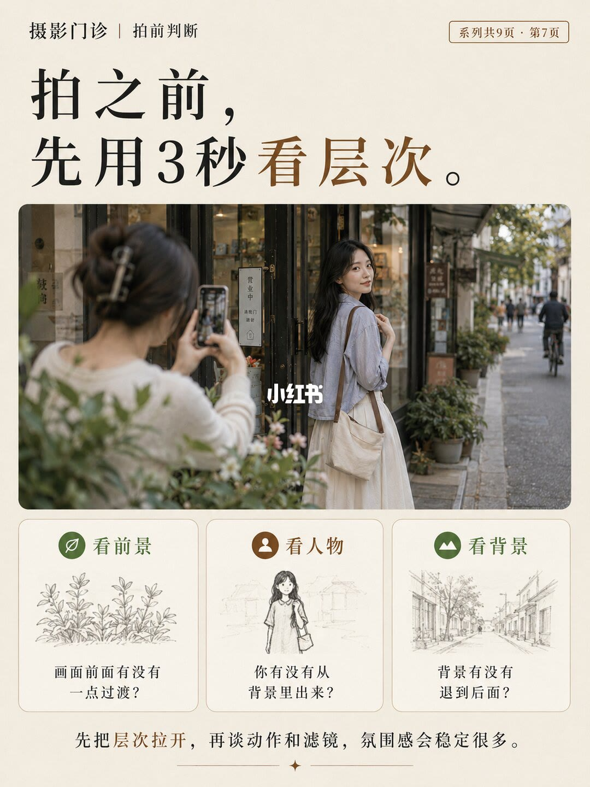
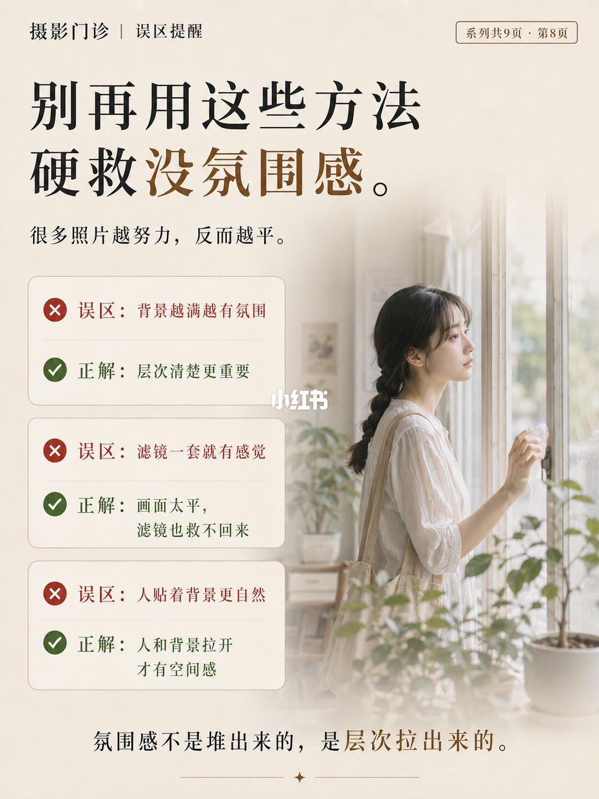
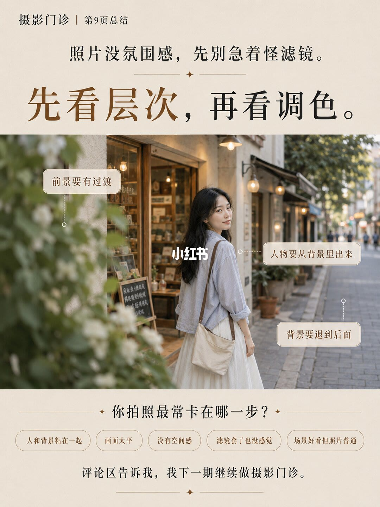

图文实录 · 小红书 · 爱拍照的七十(努力涨粉中)
照片没氛围感，先别急着怪滤镜
照片平，常常不是滤镜不够高级，而是前景、人物、背景挤在同一层。先把前中后拉开，空间感出来之后，再谈动作和调色。
1/9
画面太平，先把层次拉开

页眉是「摄影门诊｜氛围感诊断」，右上角「系列共9页 · 第1页」。大标题：为什么你的照片总是没氛围感？副题：不是场景不美，是画面太平了。
主图里，近处有虚掉的白花和叶子，人站在店门口一带，街道向后延伸。绿字标着「前中后层次拉开」，指向远处的绿字是「氛围感出来了」。左下角小图里，同一个人贴着门或墙站着，红字标「画面太平」。店招和门上的小字无法确认。
页脚：氛围感不是滤镜套出来的，先把层次拉开。这一页没有滤镜名称或参数。
2/9
场景不差，仍是没有前后关系

页眉「摄影门诊｜共鸣案例页」。标题：场景明明不差，照片为什么还是没感觉？副题：很多「没氛围感」，其实都是画面太平。
第一例红标「有光线，没空间」：人坐在窗边。说明写人、窗帘、墙面都在同一平面，没有前后层次，画面被堵住了。
第二例红标「人和背景粘在一起」：人站在门口正中间。说明写背景复杂但没有留白，整个人「贴」在背景上，跳不出来。
第三例红标「像记录，不像氛围照」：人在窄巷里回看。说明写直给的正面视角，没有前景过渡，画面平、信息多，像随手记录。
页脚：不是你不会拍，是照片里没有前后关系。
3/9
你以为是滤镜，问题是三层没分开

标题：别先怪滤镜，先看层次。副题：不是场景不美，是人、前景、背景都挤在一层。
中间那张街景被分成三层。前景指向近处虚化的花，字是「前景：负责过渡」。人物指向回看的人，字是「人物：成为中景主体」。背景指向玻璃后的街道，字是「背景：退后做氛围」。
右侧对照：红框「你以为：是不是滤镜不够高级？」绿框「真正问题：前景、人物、背景没有分开。」页脚：氛围感的第一步，不是调色，而是让画面有前后关系。图上没有写出任何滤镜或调色数值。
4/9
三处错误：没前景、人贴背景、没纵深

页眉「摄影门诊｜错误证据」。标题：没氛围感，通常错在这3个地方。
照片里人贴着浅色墙和玻璃门。门旁小木牌印着「营业中」。三处红框：① 没有前景：画面前面空着。② 人贴背景：主体和环境糊在一起。③ 没有纵深：整张图像平铺。右下红叉：场景没错，错的是画面没有拉开。
页脚：当人、墙面、门口都挤在同一层，照片就很难有氛围感。这里的「糊在一起」是图上的原句，指主体和环境贴成一层，不是一组快门或对焦参数。
5/9
正确做法是先拉开前中后

页眉「摄影门诊｜正确示范」。标题：正确做法：先把前中后层次拉开。
同一条街上，近处重新出现虚掉的花。三处标注：① 前景有过渡：画面更柔和。② 人物在中间：主体更明确。③ 背景退后：氛围自然出来。勾选框：不是滤镜突然高级了，是空间感出来了。
页脚：让前景、人物、背景分开，照片才会有空气感。
6/9
同一场景，拉开之后才有空间感

页眉「摄影门诊｜核心对比」。标题：同一个场景，层次一拉开，氛围感就出来了。
上图红标「错：整张图像一层」，旁注「没有前景，人物贴背景」。下图绿标「对：前中后层次清楚」，旁注「前景过渡，背景退后」。两张都是店门口的同一个人，下图多了近处虚化的花，街道也更往后退。店招小字无法确认。
页脚按字序是：不是场景突然变高级了，是画面终于有了空间感。
7/9
按下快门前，用三秒看三层

页眉「摄影门诊｜拍前判断」。标题：拍之前，先用3秒看层次。
中间是一张街拍：靠近镜头的一侧有虚掉的人影，中间的人在看镜头方向，街道向后走。人影里手里拿的是什么、远处有没有骑车的人，画面较小，无法确认。
下面三栏从左到右：看前景——画面前面有没有一点过渡？看人物——你有没有从背景里出来？看背景——背景有没有退到后面？栏里的简笔只剩轮廓，具体画了什么无法确认。
页脚：先把层次拉开，再谈动作和滤镜，氛围感会稳定很多。
8/9
三种硬救办法会让照片更平

页眉「摄影门诊｜误区提醒」。标题：别再用这些方法硬救没氛围感。副题：很多照片越努力，反而越平。
三组对照：误区「背景越满越有氛围」，正解「层次清楚更重要」。误区「滤镜一套就有感觉」，正解「画面太平，滤镜也救不回来」。误区「人贴着背景更自然」，正解「人和背景拉开才有空间感」。
右侧是窗边的人，近处有虚掉的绿叶，人在窗光里。衣服款式和发型细节无法确认。页脚：氛围感不是堆出来的，是层次拉出来的。这一页同样没有滤镜名称。
9/9
先看层次，再看调色

页眉「摄影门诊｜第9页总结」。两行标题：照片没氛围感，先别急着怪滤镜。先看层次，再看调色。
街景上三条标注：前景要有过渡；人物要从背景里出来；背景要退到后面。
下面问：你拍照最常卡在哪一步？五个选项是：人和背景粘在一起、画面太平、没有空间感、滤镜套了也没感觉、场景好看但照片普通。页脚：评论区告诉我，我下一期继续做摄影门诊。
汇总
层次拉开，氛围才稳
结论。没氛围感，先查前景、人物、背景有没有分成三层。4/9 的错是前面空着、人贴背景、没有纵深；5/9 和 6/9 用同一类店门口说明，补上前景过渡、让背景退后，空间感才出来。滤镜和调色被放在层次之后，8/9 写明画面太平时滤镜也救不回来。
支撑页。1/9 用主图和小图对照「前中后层次拉开」和「画面太平」。2/9 给三种平：有光没空间、人贴背景、像记录。3/9 把「滤镜不够高级」改写成三层没分开，并给前景过渡、人物中景、背景退后。7/9 是拍前三秒的三问。9/9 收成「先看层次，再看调色」。
边界。九页都没有滤镜名称、强度、色温或曲线。也没有焦距、光圈、快门。4/9 的「糊在一起」是贴层，不是一组对焦数据。1/9 店招和 6/9 店招小字无法确认；7/9 近处人影手里的东西、栏内简笔、8/9 衣服款式无法确认。笔记没有说每一种场景都必须放花，7/9 只问前面有没有一点过渡。